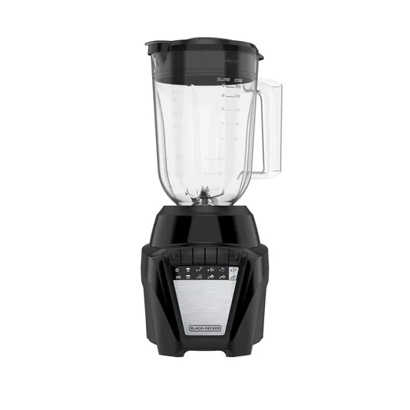
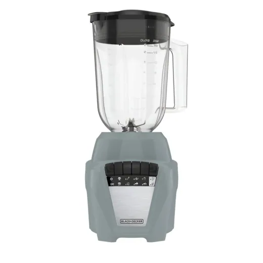
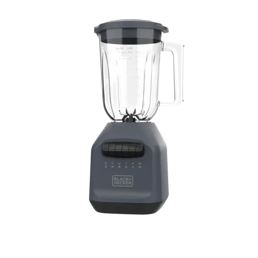
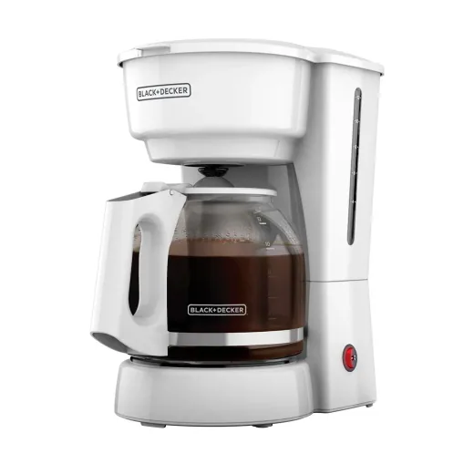
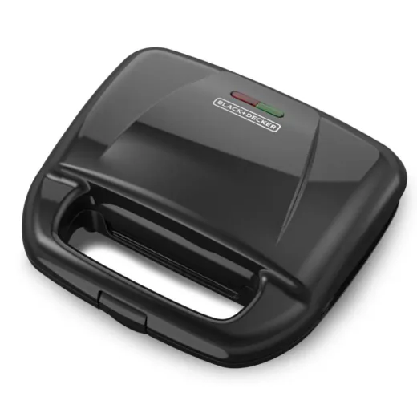
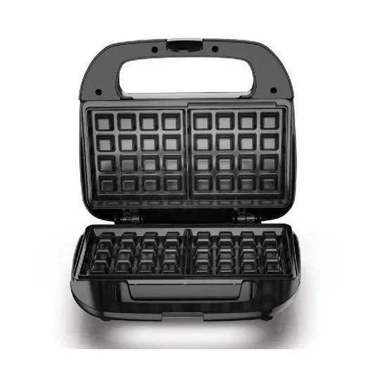
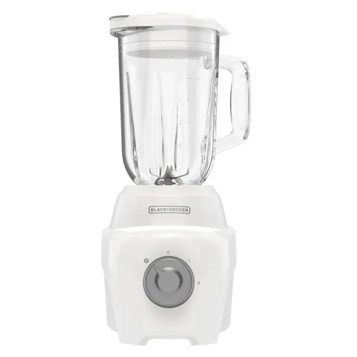
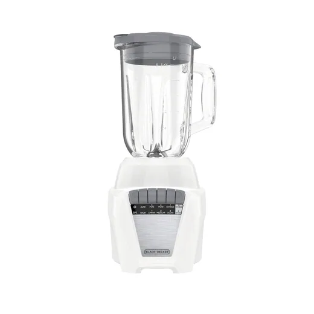

Inicio › Licuadoras y cafeteras

Black+Decker · Modelo BL08771BDLA
Licuadora Black+Decker 1.65L, 700W, 8VEL
L 897
Más barato en La Curacao · ahorras hasta L 98 frente a la tienda más cara
Precio en cada tienda
| Tienda | Precio | Antes | Disponibilidad | |
|---|---|---|---|---|
| La Curacao | L 897 | Disponible | Ver en tienda › | |
| Diunsa | L 990 | Disponible | Ver en tienda › | |
| Gallo más Gallo | L 995 | Disponible | Ver en tienda › |
Precios referenciales tomados de cada tienda el 21 de noviembre de 2026. El precio válido es el que muestra la tienda al comprar.
Historial de precio
Lo seguimos desde el 1 de noviembre. Precio más bajo registrado: L 897 en La Curacao (10 de noviembre), igual que hoy. Cambios de precio registrados: 5.
Características
| Color | Azul claro/Plata natural |
|---|---|
| Potencia | 700 W |
Descripción
Licuadora Black & Decker BL08771BDLA Gran capacidad de 1.65 litros Prepará tus recetas favoritas con esta licuadora de gran capacidad, perfecta para grandes porciones. Envase de plastico ergonómico El envase de plastico es resistente y fácil de manejar, además de simplificar la limpieza. 4 cuchillas de acero inoxidable Las cuchillas de acero inoxidable aseguran un corte eficiente y una larga vida útil. Tapa de doble abertura La tapa con doble abertura permite agregar ingredientes fácilmente sin interrumpir la mezcla. Potencia de 700 W para triturar hielo Con 700 W de potencia, triturá hielo y prepará batidos perfectos de manera rápida. 8 velocidades más pulso Elegí entre 8 velocidades y una función de pulso para obtener la textura ideal en cada preparación.
Otros licuadoras y cafeteras Black+Decker

Licuadora Black+Decker 8VEL, 700W, 1.65L, Plast, VerL 899En 2 tiendas · más barato en Diunsa
Licuadora Black+Decker Ice Crush 8 velocidadesL 895En Walmart
Cafetera Black + Decker 12 Tazas Blanco CM0916WL 900En La Curacao Licuadora Black+Decker 8VEL/700WTTS, Vidrio-rojaL 869En Diunsa
Licuadora Black+Decker 8VEL/700WTTS, Vidrio-rojaL 869En Diunsa
Waflera Black + Decker 2 Rebanadas Negro WM120BL 927En La Curacao
Waflera Black+Decker, Negro 760 WattsL 849En 2 tiendas · más barato en Diunsa
Licuadora Black+Decker 2VEL/700WTTS, Vidrio-blancaL 829En Diunsa
Licuadora Black+Decker 8VEL/700WTT Vidrio- BlancoL 979En Diunsa